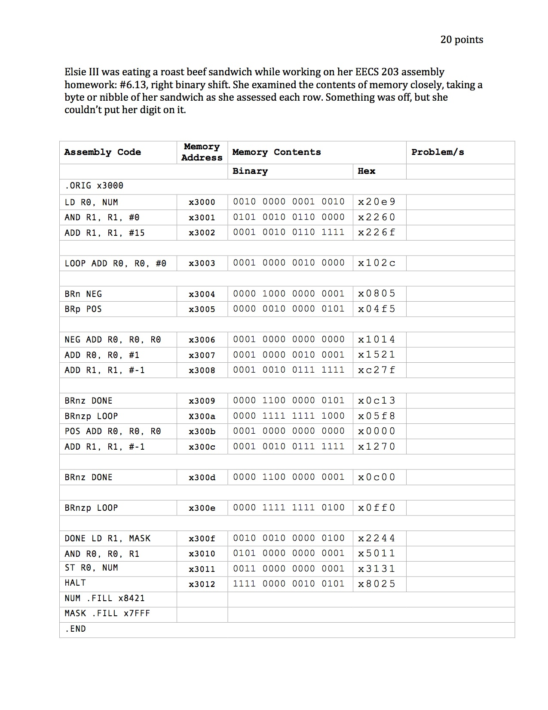

hi, i'm lizz.
A subset of things I like to make and tinker with.
LinkedInNorthwestern University, 2014
McCormick (graduated cum laude)
Computer Science B.S, Psychology Minor
Resume PDF (Updated 2/2/15)
If you are a recruiter that would like to get in touch, please email me, since I excluded my address/phone number from this resume version.
Career Fair Web App
January 2015, October 2014. Originally created for an interfaces-focused independent study for senior year spring (2014).
SWE Industry Day 2014
McCormick Office of Career Development TechExpo 2015
Introduction to Facebook Graph API
November 2014. Created as part of an interview. Utilizes Facebook Graph API and the Masonry layout plug-in.
Rendering of FiTS board game
December 2014. First time using CSS gradients. The mechanics of gameplay are still in progress. To compare these to the physical game appearance, see here and here.
See the Pen FiTS Boards renderings - CSS only by lizz (@lizz) on CodePen.
Dynamically generating SVG using Vanilla JavaScript
January 2015.
Braille SVG Alphabet
See the Pen SVG Braille alphabet via JS by lizz (@lizz) on CodePen.
Semaphore SVG Alphabet
See the Pen SVG Semaphore Flag Alphabet via JS by lizz (@lizz) on CodePen.
Creating Icon Font using IcoMoon (in progress)
Hoboglyphs - SVG icons manually created
See the Pen ZYaqyY by lizz (@lizz) on CodePen.
Side Project: Templating OITNB data with Mustache & Bootstrap
Spring 2014.
See the Pen templating oitnb data by lizz (@lizz) on CodePen.
Side Project: Meal Equivalency & Points Calculator
Fall 2013/Winter 2014.
meap
NU WiC [mini] Puzzle Hunt Puzzles
January 2014.
Puzzles and promotional materials created for a Women In Computing at Northwestern University event.



Interactive Fiction
May 2013.
Class project for Northwestern EECS 370: Computer Game Design, taught by Prof. Ken Forbus. Warning: A bit morbid and gruesome.
Karla - an interactive fiction (i.e. "text adventure") game Hint: Don't skip over the initial instructions! :)
Agile Software Development
Fall 2012. Class project for Northwestern EECS 394, taught by Prof. Riesbeck. Worked in teams of 3-4 to create 2 projects during the quarter, one of which was with graduate students as external clients. MiPet ; nuFood
Constructionist HTML/CSS Environment for Elementary Schoolers
Winter 2013. Created as the final project of the course LS 426: The Design of Technological Tools for Thinking and Learning (DTTTL), taught by Prof. Uri Wilensky.
Drag and Drop HTML/CSS Editor